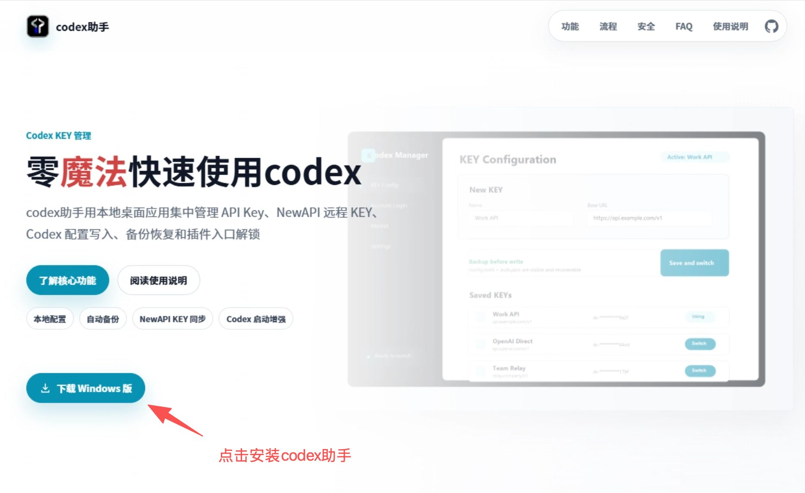
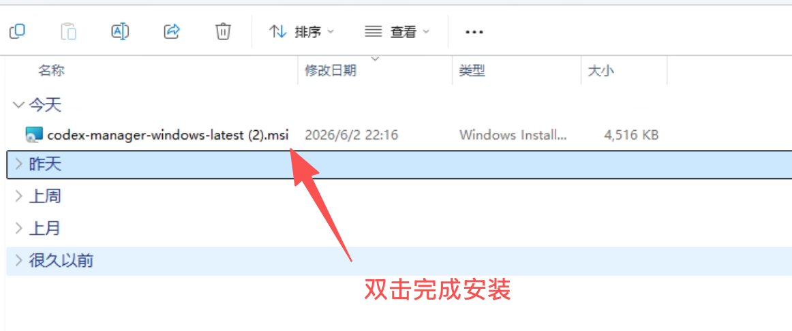
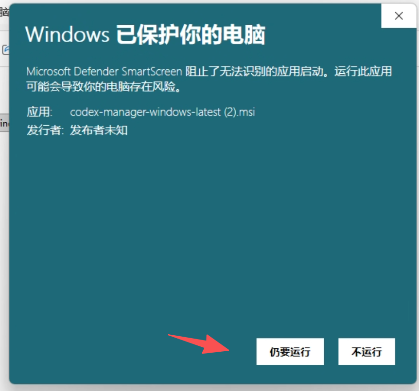
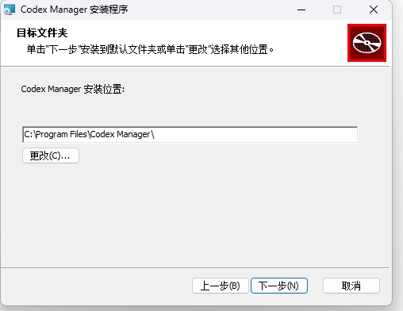
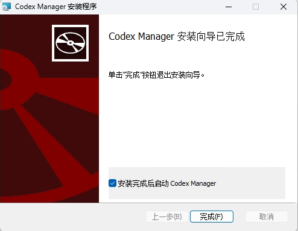
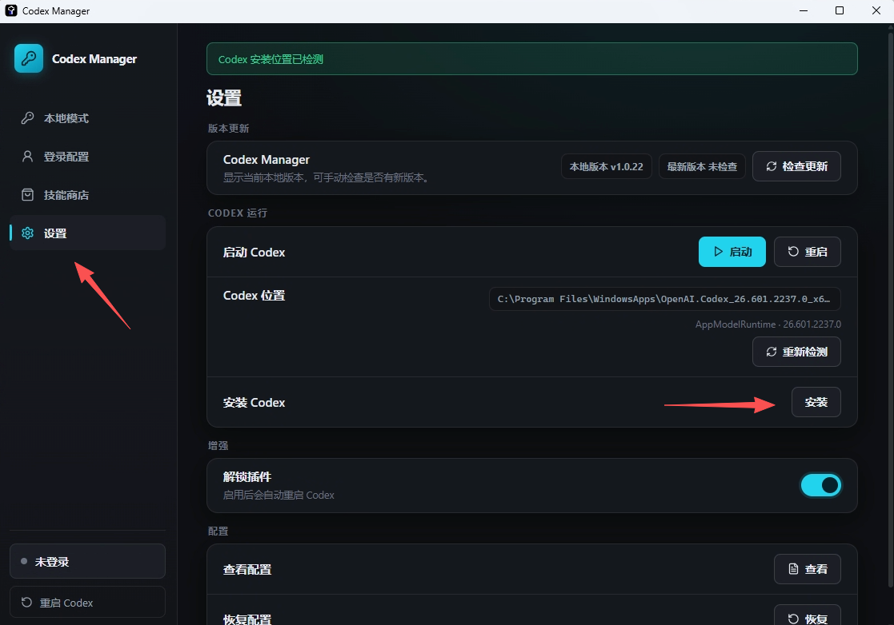
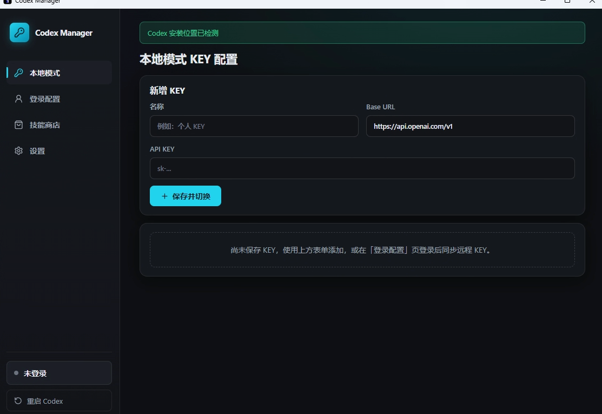
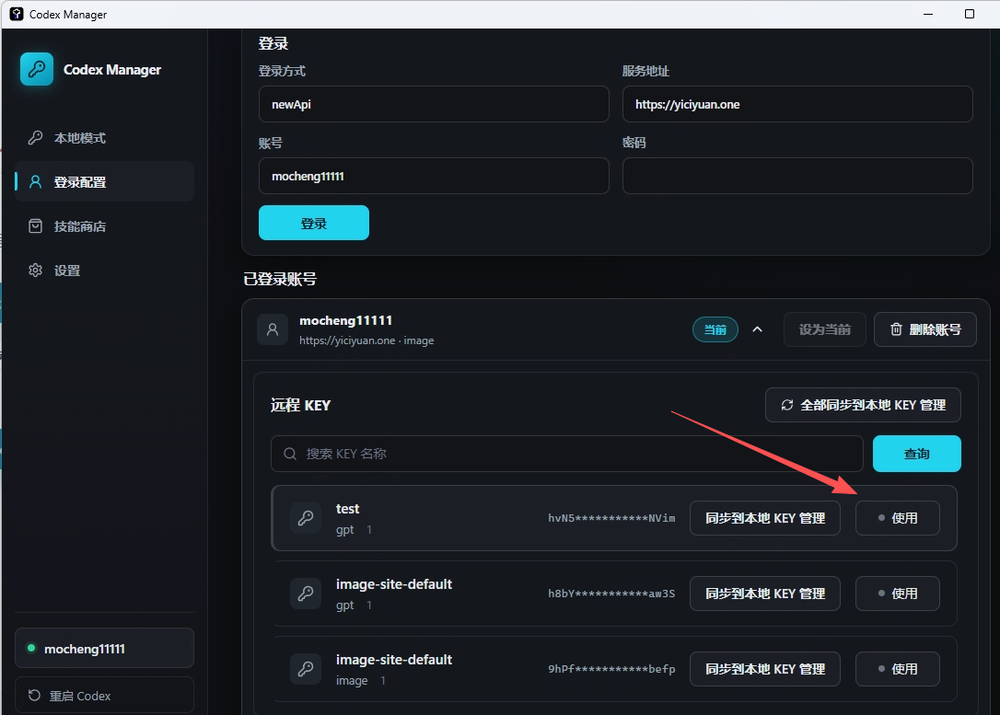
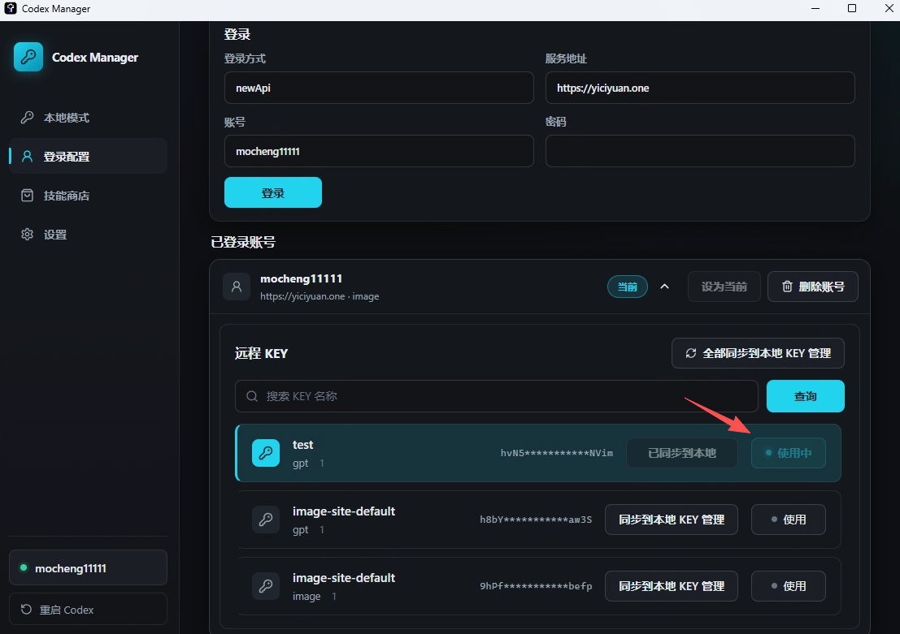
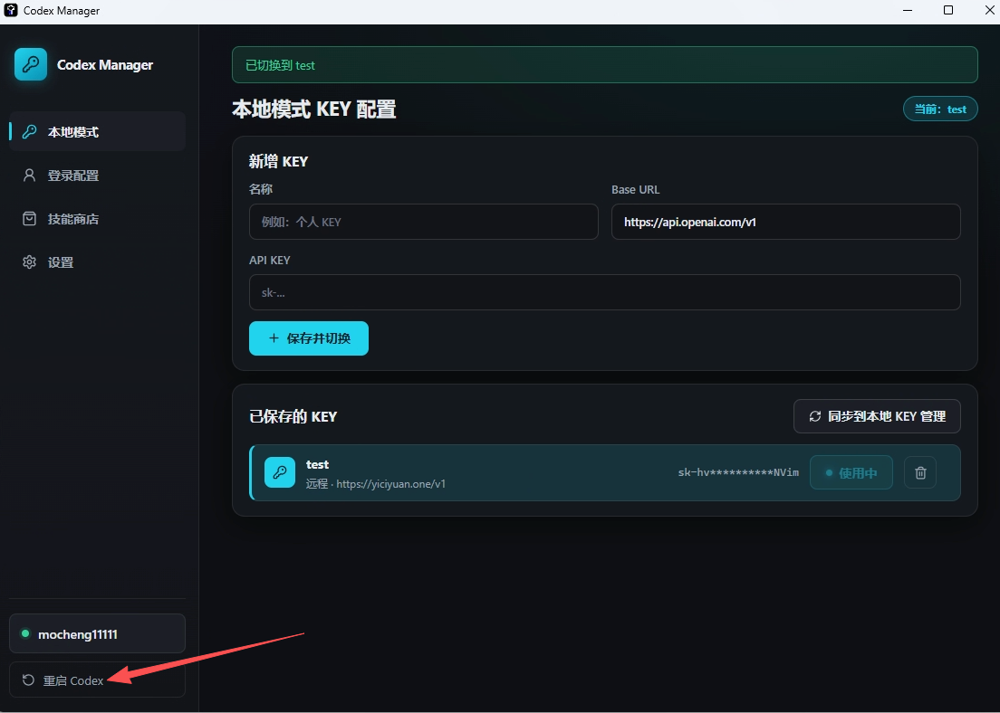

图文使用说明
codex助手使用指南
按照下面步骤完成 codex助手 下载、安装、Codex 安装、本地模式配置、NewAPI 登录、 KEY 同步和重启 Codex。

1. 下载并安装 codex助手
下载完成后打开安装包，进入 codex助手 安装流程。

有些 Windows 电脑会弹出保护程序，需要点击允许继续安装。

2. 选择安装路径并完成安装
安装过程中可以选择 codex助手 的安装路径，然后继续安装。

安装结束后点击完成，打开 codex助手。

3. 未安装 Codex 的用户先安装 Codex
如果电脑上没有安装过 Codex，进入设置页，点击安装 Codex，安装最新版本。

4. 使用本地模式配置自己的 KEY
本地模式支持填写自己的 API KEY 和 Base URL。
- 进入本地模式。
- 填写名称、Base URL 和 API KEY。
- 保存后即可作为本地 KEY 统一管理和切换。

5. 登录 NewAPI 类型的中转站
codex助手 支持登录 NewAPI 类型的中转站，获取已经在中转站里设置好的 KEY。
- 进入登录配置。
- 填写服务地址、账号和密码。
- 登录成功后查看可用 KEY。

6. 使用远程 KEY 并同步到本地模式
点击同步并使用后，会把远程 KEY 同步到本地模式里，后续统一进行 KEY 管理。
- 在登录账号下选择需要使用的 KEY。
- 点击同步并使用。
- codex助手 会同步到本地模式并切换当前 KEY。

7. 重启 Codex 让配置生效
点击使用 KEY 后，重启 Codex，就可以完成 Codex 的 API 登录模式配置。

如果已经打开 Codex，建议在 codex助手 的设置页点击重启 Codex，让最新 KEY 配置立即生效。